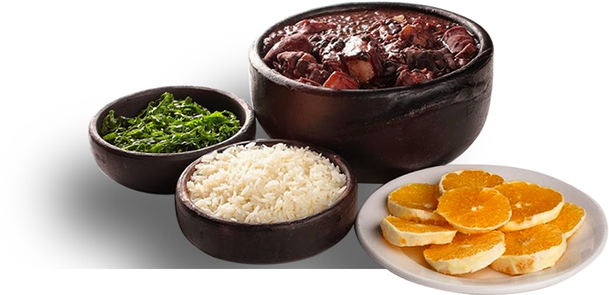

Receita de Feijoada

Ingredientes
- 1 kg de feijão preto
- 2 colheres de sopa de óleo de girassol
- 80 gramas de bacon cortado em cubos
- 4 unidades de folha de louro seca
- 4 litros de água
- 220 gramas de linguiça calabresa de porco
- 180 gramas de linguiça de paio
- 800 gramas de charque
- 900 gramas de costela de porco defumada
- 500 gramas de pé de porco
- 3 unidades de cebola
- 1 kg de acém em bifes altos cortados em cubos
- 2 sachês de TEMPERO IDEAL KNORR MEU FEIJÃO
- 1 colher de sopa de CREME DE CEBOLA KNORR
Modo de Preparo
- Deixe as carnes suínas em dessalga por 24h e faça troca regulares da água de 3 em 3 horas.
- Em uma panela grande, escalde o pé de porco e garanta que está sem sal em excesso. Reserve
- Corte o bacon em cubos e doure com óleo em uma panela quente, adicione a cebola em cubos e refogue em uma panela grande, adicione o louro e o feijão e cubra com água
- Acrescente o pé de porco, costelinha defumada e a carne seca.
- Deixe cozinhar por cerca de 40 minutos, adicione o creme de cebola e o tempero Meu Feijão e misture tudo.
- Acrescente as linguiças cortadas em rodelas e tampe a panela com fogo baixo, deixe cozinhar até o feijão ficar macio. Sirva em seguida.
Voltar para a receita de Strogonoff.